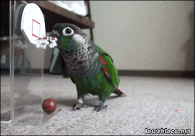

ANIMALES DOMÉSTICOS
Los animales domésticos son aquellos que los humanos crían y cuidan en sus hogares como compañeros, o también para obtener beneficios como comida, lana o leche. Son animales que han aprendido a convivir con las personas y a depender de ellas para sobrevivir.
Debemos darles comida, agua, un lugar seguro para vivir, y también hacerlos jugar y pasear.
PERRO
Un perro es un animal muy cariñoso y juguetón que puede vivir con las personas en sus casas. Es uno de los mejores amigos del ser humano porque nos acompaña, nos cuida y nos hace compañía. Los perros pueden ser grandes o pequeños, tener mucho pelo o poco, y ladran para comunicarse. Les gusta correr, jugar y que los acaricien. Además, algunos perros ayudan a las personas: pueden guiar a personas ciegas, cuidar una casa o incluso ayudar a buscar personas perdidas. ¡Son animales muy inteligentes y leales!
Escucha como hace el perro:
GATO
Un gato es un animal pequeño, suave y muy curioso. Tiene un cuerpo cubierto de pelito, bigotes largos y orejas puntiagudas. Los gatos son conocidos por ser muy ágiles y les encanta saltar y explorar su entorno. Muchas personas tienen gatos como mascotas en sus casas, porque son muy independientes, pero también pueden ser muy cariñosos. Les gusta dormir mucho en lugares cálidos y tranquilos. Y cuando están contentos, ¡hacen un sonido especial llamado "miau"!

Escucha como hace el gato:
CONEJO
Un conejo es un animal suave y saltarín. Tiene orejas largas, nariz que se mueve todo el tiempo y una colita chiquita y peludita. Los conejos pueden vivir en el campo o como mascotas en casa. Les encanta comer zanahorias, lechuga y otras verduras. Son muy rápidos, curiosos y les gusta hacer túneles o esconderse. A los conejos les gusta que los traten con cariño y pueden ser muy amigables si los cuidas bien.

Escucha como hace el conejo:
PERICO
Un perico es un pajarito muy colorido y divertido. Tiene plumas verdes (aunque a veces también tiene otros colores), un pico curvo y patas pequeñas. A muchos pericos les gusta vivir en jaulas grandes donde puedan volar un poco y jugar. Son muy inteligentes y algunos incluso pueden imitar palabras o sonidos humanos. Les encanta hacer ruiditos, silbar y estar acompañados. Por eso, muchas personas los tienen como mascotas. ¡Un perico feliz canta y mueve sus alitas con alegría!
Escucha como hace el perico: